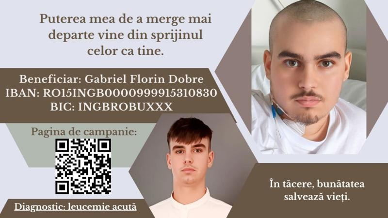

Împreună pentru Gabriel Florin Dobre
Gabriel Florin Dobre are doar 20 de ani. La vârsta la care ar trebui să meargă la facultate, să-și facă planuri pentru viitor și să se bucure de fiecare zi, el luptă pentru viața lui. A fost diagnosticat cu leucemie acută, o formă agresivă de cancer al sângelui.
Boala a venit pe neașteptate. În doar câteva săptămâni, Gabriel a trecut de la o viață normală la saloanele reci ale spitalului Fundeni. A început o primă cură de chimioterapie dură, pe care a dus-o cu o tărie impresionantă. Este la a doua cură, mai complexă.
Medicii au fost sinceri: spunând ca șansă lui de vindecare mai rapidă cu rezultate pozitive este un transplant de celule stem, într-o clinică specializată din Milano. Costul tratamentului, intervenției și perioadei post-operatorii ajunge la 250.000 de euro. Este o sumă mare... dar nu imposibil de strâns, de aceea apelăm la ajutorul vostru.
Fiecare donație înseamnă o zi câștigată. Fiecare distribuire îl poate aduce mai aproape de salvare. Nu lăsa ca timpul să treacă fără să faci ceva. El are nevoie de noi acum.
🔴 Hai să-i fim SPERANȚĂ. Să-l ajutăm să aibă o viață sănătoasă.
📍Beneficiar: Gabriel Florin Dobre
IBAN: RO15INGB0000999915310830
BIC (SWIFT): INGBROBUXXX
Detalii plată: " Donație transplant "
🔴 Hai să-i fim SPERANȚĂ. Să-l ajutăm să aibă o viață sănătoasă.
📍Beneficiar: Gabriel Florin Dobre
IBAN: RO15INGB0000999915310830
BIC (SWIFT): INGBROBUXXX
Detalii plată: " Donație transplant "
Donează instant cu telefonul:
1. Deschide aplicația ta bancară.
2. Alege opțiunea “Plată prin QR” sau “Scanare QR”.
3. Scanează codul QR de mai jos.
4. Confirmă detaliile și efectuează transferul.

*Codul QR funcționează cu majoritatea aplicațiilor bancare din România.